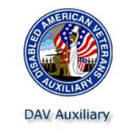

DAVA MEMBERSHIP APPLICATION

Applications for Membership can be accomplished online at the
Disabled American Veterans Auxiliary National Website.
To apply ONLINE, please go to
Click on "Membership", then "Join DAV Auxiliary".
Applications for Membership can be made by mail to DAVA National Headquarters. Print the Membership Application Form shown in PDF form (see below), fill it in, and return with your payment to the address below:
DAVA
You can also apply directly for Membership to a local Chapter near you.
Please see our listing of Chapter Officers and Chapter locations in the Main Menu.
If you prefer, please give us a call at Disabled American Veterans, Department
of Mississippi Headquarters
at (601)364-7178 and we will be pleased to help you in becoming a member of the DAV.